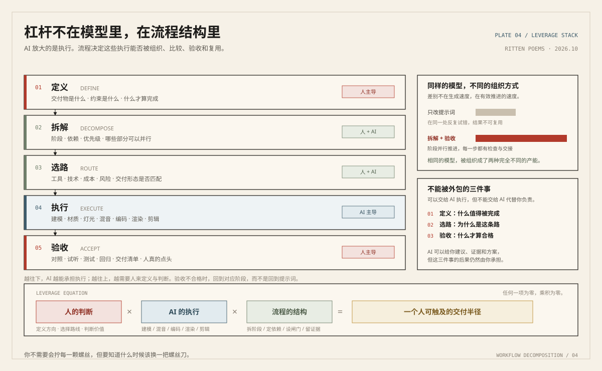

被高估的工具，被低估的思维
Codex 这类工具被高估了，而产品思维、工程思维被低估了。
这不是在否认它们强。它们确实强，强到我有时候不确定屏幕对面那个执行过程还需要我什么。但如果一个人不知道自己要的东西凭什么值得做、不知道系统由哪些部分构成、不会判断结果是好是坏，工具只会让他更快地生产出一堆不需要的设计。
工具放大的是你已经拥有的判断力，不是它缺席的部分。
这一页不放教程，也不放观点营销。它记录的是我在做技术、做内容、做教学时反复回到脑子里的几句话。它们解释了为什么这个网站长成现在这样。
「如果停止创造，
那么我就只剩下了
无聊的品味。」
我热爱欣赏优秀的技术与艺术作品——电影、漫画、音乐、别人做出来的系统。但看别人做得好，本身不会让我满足。我需要自己也做出点东西来，哪怕它不够好。
作品不一定要是软件。它可以是一条把机制讲清楚的视频、一篇文章、一套能教下去的课程，甚至只是一种新的思考方法。这大概也是我同时在做这么多不相干事情的原因。
六条短手记依据我长期表达过的一贯观点整理；两篇长文，一篇来自三次真实实验，一篇来自最近对小企业的观察。
The Beacon-Fire of This Age
有些老板根本不相信 AI。问题也许不在技术，而在过去这些年被反复点燃的烽火。一次关于信任、营销与自我校准的记录。
读全文 →烽火本来是用来
传递重要消息的。
Two stories. One signal.
Workflow Decomposition
AI 能执行多少，取决于你如何定义、拆解与验收。来自三维、音乐与交付三次真实实验，包括失败、返工和终止的部分。
读全文 →
Codex 这类工具被高估了，而产品思维、工程思维被低估了。
这不是在否认它们强。它们确实强，强到我有时候不确定屏幕对面那个执行过程还需要我什么。但如果一个人不知道自己要的东西凭什么值得做、不知道系统由哪些部分构成、不会判断结果是好是坏，工具只会让他更快地生产出一堆不需要的设计。
工具放大的是你已经拥有的判断力，不是它缺席的部分。
我希望理解技术为什么能够工作，而不只是记住怎么操作它。
这两者的区别要在换环境时才看得出来：一个新工具发布，只会操作的人需要重新学一遍流程；理解机制的人能猜到它大概怎么做、哪里会出问题。前者积累的是名词，后者积累的是可以迁移的框架。
真正有价值的理解，应该能帮你面对一个陌生问题。
我认为 AI 是一种能力杠杆。它让很多原本需要长期专业训练的工作变得可以被普通人完成。
但会用强大的工具不等于具备真正的创造能力。一个人仍然需要判断什么值得做、为什么做、如何衡量结果，并为最终的作品承担责任。把这几件事一起外包出去，得到的不是创造力，只是省了力气。
我在课堂上反复讲的，就是这一句里被省略的那部分。
我不希望把知识变成难以理解的术语壁垒。用一个只有同行听得懂的词解释另一个词，看起来专业，实际上是把理解的负担推给了读者。
这也是我做科普短视频的原因。如果一段内容在几十万人面前被讲明白了，那它就不只是教学内容，它决定了有多少人觉得自己“不适合学技术”。
能被听懂，是我给自己定的验收标准。
我很重视通过实验验证想法。愿意研究新技术，也愿意在真实实践里推翻自己的认知。
技术乐观的口号和悲观的预言都不缺人讲，缺的是有人把它接进一个真实流程，看看它在哪一步崩、崩得多严重、能不能绕过去。我的项目基本都是这样来的。
Varve 之所以是这个形状，是因为我先被它难住过。
我仍在探索自己的职业道路。技术、创作、教育与独立事业，对我而言不是四个需要二选一的方向。
它们更像是同一件事的不同侧面：都在处理“怎么把复杂的东西变成别人能用上的东西”。我正在做的，是把它们之间的联系一点点找出来，并且用作品和课程把它们固定下来。
这里没有成功学。我只是还在路上，并且知道自己在往哪走。
它们不是装饰。这些偏好决定了我的内容为什么长这样、我的审美往哪里靠。
大约十七岁时读到这本书，对我认识自我、理解个体的复杂性有过实际影响。一个人身上可以同时住着好几样东西，这件事我后来在很多地方都验证过。
我一直喜欢电影，也曾经想从事电影创作。这两部是我会反复回看的：一个用喜剧的语气讲极沉重的东西，一个把抽象的物理量拍成父子关系。
喜欢他作品里的电影感、叙事方式和情绪表达。分镜的取舍、什么时候不给读者看清、什么时候突然给一整页——这些和做科普视频时决定“这一刻画面出现什么”是同一种思考。
口味很杂，但共同点是都有明确的情绪推进。音乐和影像对我的视觉审美与创作兴趣影响最久，也直接影响我做视频时对节奏的判断。
Agent 技术文章、AI 教育的方法笔记、研究过程的记录，以及一些和 AI 无关的随笔。它们会先出现在这里，然后按主题归入相应页面。
想聊某个话题，或者你正在处理一个类似的问题，可以直接写信给我。
写信或预约讲解 →